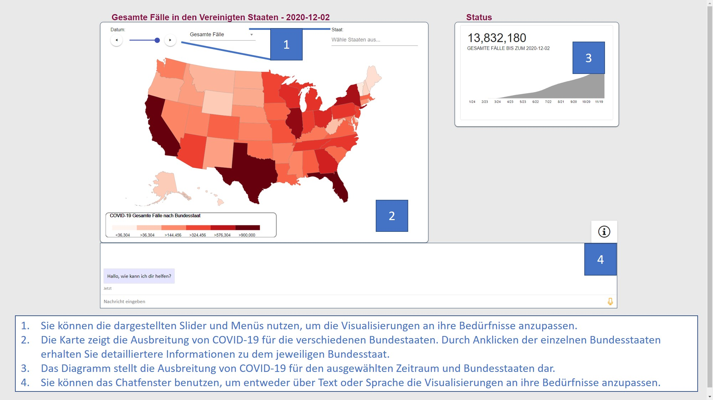

<div class="popup-overlay" id="overlay">
  <!--Creates the popup content-->
  <div class="popup-content" id="content">
    
    <button kendoButton [icon]="'close k-icon-30'" (click)="closeInfo()" style="position: absolute; bottom: 0; right: 0; height: 10%; width:15%;"> Close </button>
  </div>
</div>
<!--Main Part-->
<div class="mouseBlock" id="hallo"></div>
<div class="row" style="width: 100%;">
  <div id="map"  style="width: 60%;">
        <div></div>
        <div><h2 style="font-size: 1.5rem;"><button kendoButton id="backButton" [icon]="'arrow-chevron-left'" (click)="navigateLeft()"></button>&nbsp;{{metric}} in {{countiesMap.selectedState }} - {{countiesMap.date }}</h2></div>
        <app-counties-map (dateChanged)="dateChanged($event)" #countiesMap></app-counties-map>
  </div>
  <div id="info"  style="width: 40%;">
              <div><h2>&nbsp;</h2></div>
              <app-metric-summary #metricSummary></app-metric-summary>
    <div class="webchat-container" id="botWin" #botWindow ></div>
  </div>
</div>
<div class="row">
  <button kendoButton id="infoButton" [icon]="'information k-icon-30'" (click)="openInfo()" style="position: absolute; top: 0; right: 0;  height: 50px; width:100px;"></button>
</div>
<!--END County Component-->


 


